DV-CQ-006 · Aprovar, emitir e corrigir resultado não deixam histórico: a consulta de log vem vazia ou só mostra a inclusão
Depois de **aprovar, emitir o laudo e atualizar** a 017/26, o log da solicitação mostra **só a inclusão** feita pelo Estoque (22/10 e 23/10, sem os atos do CQ) e o log da análise diz **"NÃO EXISTE LOG DE ALTERAÇÃO PARA ESTE REGISTRO."** Na 018/26, o teor foi corrigido de 120 para 100 pela Emissão Laudo Final: a tela exigiu justificativa e disse "Alteração efetuada com sucesso.", o valor mudou, mas o log do ensaio também respondeu "NÃO EXISTE LOG DE ALTERAÇÃO PARA ESTE REGISTRO." (as duas linhas do ensaio). Quem aprovou e quem reprovou não é gravado.
Como reproduzir o erro, passo a passo
- Aprovar, emitir e atualizar uma análise; clicar no ícone Log da solicitação e da análise.
- Em Emissão Laudo Final › Anterior, corrigir o teor de um ensaio (lápis), informar a justificativa e salvar; abrir o ícone Log do ensaio.
Esperado
Cada decisão e cada correção com usuário, data, valor antigo, valor novo e justificativa.
Obtido
Log vazio ou só com a inclusão.
Evidência (captura da tela)


DV-CQ-007 · Uma solicitação com laudo liberado pode ser cancelada; o cancelamento mostra "Ocorreu um erro inesperado." e não fica no histórico
A solicitação 016/26, com **laudo liberado**, foi cancelada com a justificativa "ab". A tela respondeu **"Ocorreu um erro inesperado."**, mas a situação virou **Cancelada** e a lista continuou mostrando "Laudo Liberado" (DV-CQ-021). O log da solicitação **não traz o cancelamento**. A mesma mensagem apareceu ao cancelar a 023/26 (água), com justificativa completa, e ela também ficou Cancelada.
Como reproduzir o erro, passo a passo
- Abrir Solicitação de Análise e Detalhar uma solicitação com situação "Laudo Liberado".
- Clicar em Cancelar, confirmar, escrever a justificativa e confirmar.
Esperado
Recusar o cancelamento de laudo liberado e, nos demais casos, gravar o cancelamento com justificativa e usuário.
Obtido
Erro genérico, solicitação cancelada, log sem o cancelamento.
Evidência (captura da tela)
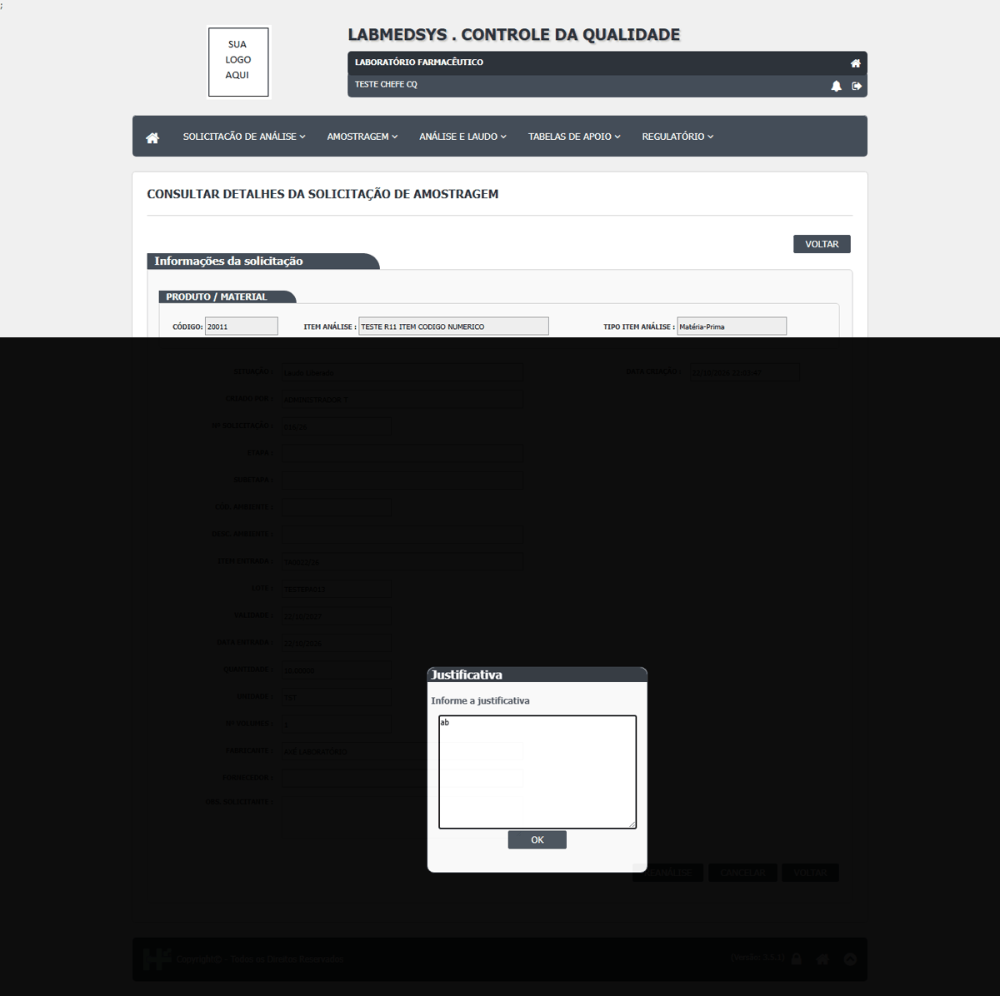
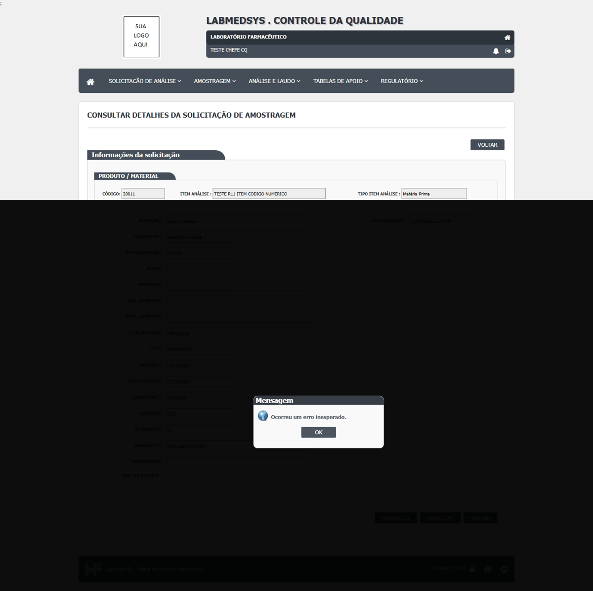
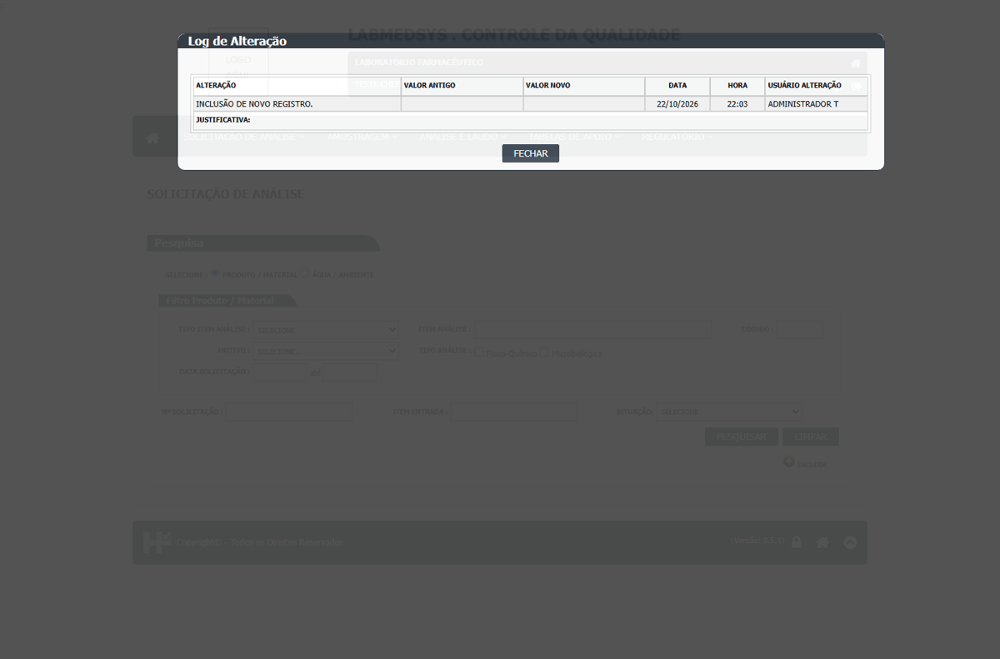
DV-CQ-008 · Água: a Programação de Amostragem de qualquer ponto de água quebra com erro de servidor por causa do nome da tabela de tipo de água no banco; a agenda de água também não carrega (resolvido no ambiente em 03/11/2026; aberto no projeto de banco)
Ao abrir a programação da amostragem de uma solicitação de **água** (potável, purificada ou para injetáveis), o servidor devolve a página de erro técnica com **"Invalid object name 'dbo.TBL_TIPO_AGUA'"**: a tabela de tipo de água, ligada aos pontos de água do Principal, **não existe no banco**. Por isso nenhuma solicitação de água anda; a agenda de água também dá "Ocorreu um erro interno não esperado." (DV-CQ-001), mesmo com pontos de água novos e ativos. Água de ambiente (salas) funciona.
Como reproduzir o erro, passo a passo
- Criar, em Solicitação de Análise › Incluir › Água / Ambiente, uma solicitação de água purificada.
- Abrir Programação de Amostragem, filtro Água / Ambiente, e clicar em programar a solicitação: página de erro.
Esperado
Programar a amostragem e seguir o ciclo (amostragem, análise, laudo).
Obtido
Página de erro de servidor com o nome da tabela; ciclo de água bloqueado.
Evidência (captura da tela)


DV-CQ-027 · Perfil só de consulta abre solicitação de análise
Com o usuário de perfil só de consulta (sem incluir, alterar, excluir, log nem imprimir), a tela de inclusão de solicitação de água/ambiente abriu pelo endereço com o botão Salvar e gravou a solicitação **106/26** (ambiente PRD-PES-01, microbiológico).
Como reproduzir o erro, passo a passo
- Entrar com o usuário de perfil só de consulta e abrir o CQ.
- Abrir Solicitação de Análise › Incluir (água/ambiente) pelo endereço.
- Escolher AMBIENTE, o item PRD-PES-01, marcar Microbiológico e clicar em Salvar.
Esperado
Recusar a gravação (e esconder o botão) para um perfil que só tem a consulta da tela; registrar a tentativa.
Obtido
"Inclusão efetuada com sucesso."; a 106/26 aparece em Programação de Amostragem.
Evidência (captura da tela)
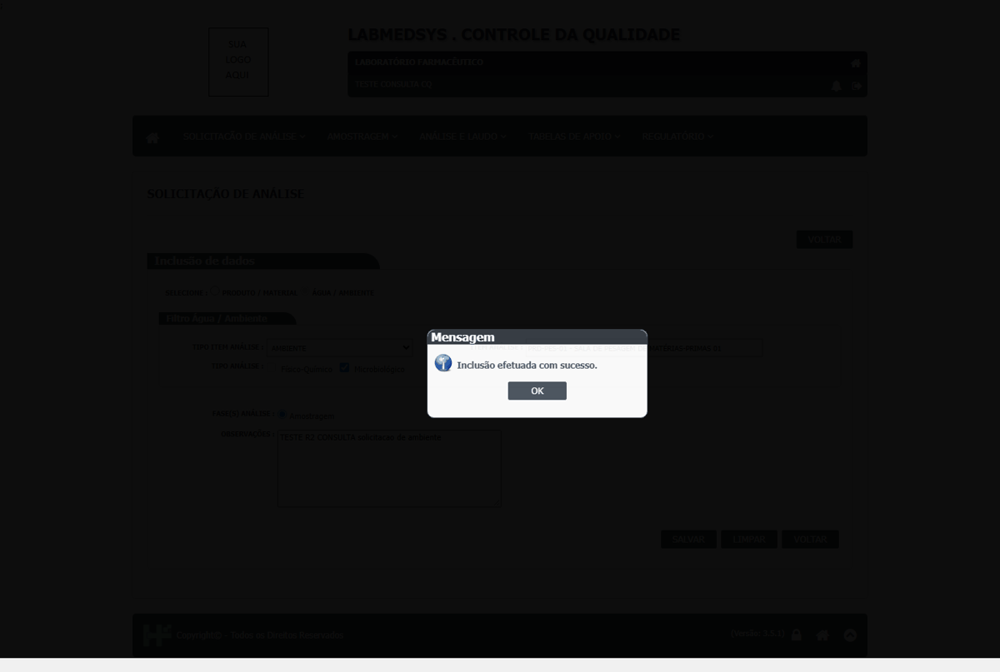
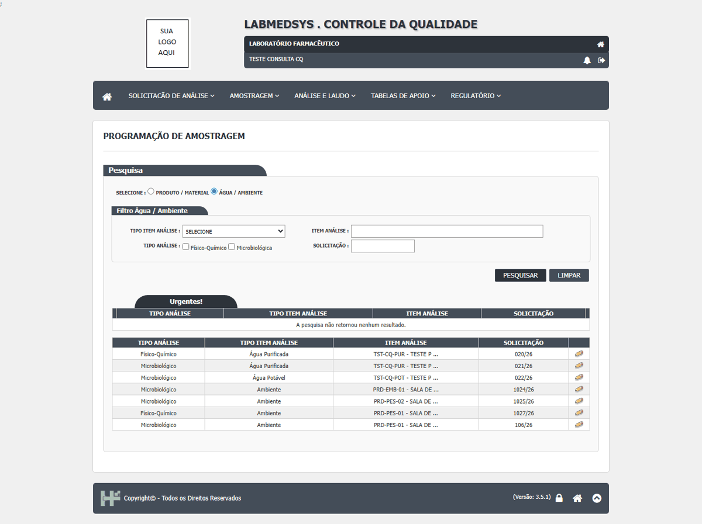
DV-CQ-051 · Nova solicitação de produto ou material não encontra nenhum item (busca vazia) e as solicitações de amostra geradas no Estoque não chegam ao CQ
(1) No Estoque, três entradas novas (lotes TESTEBT1, TESTEBT2 e TESTEBT3 do item TST0003, itens de entrada TA0038/26, TA0039/26 e TA0040/26, validade 12/11/2027, quarentena) ficaram "AGUARDANDO ANÁLISE". Em cada uma, **SOLICITAR AMOSTRA** respondeu "Solicitação gerada com sucesso!" (solicitações do Estoque 00091, 00092 e 00093, "AGUARDANDO SEPARAÇÃO"). **Nenhuma solicitação de análise nova apareceu no CQ** (a lista continua em 110/26 em consultas repetidas). (2) Em **Solicitação de Análise, Incluir (produto/material)**, a busca do item (campo Nome do item, ação AutoCompleteItemRegulatorio) **devolve lista vazia** para qualquer tipo de item e qualquer motivo (TESTE22, TESTE R2 CONSULTA MOTIVO e dois motivos novos, um para cada tipo de almoxarifado), de modo que o lote não é oferecido. O código mostra que a busca depende do **motivo** (tipo de almoxarifado): `AutoCompleteController.cs:47-52`. Não foi possível criar o registro; as situações que dependem de uma solicitação nova (Programada, Liberar laudo, Laudo liberado novo) ficaram **Bloqueado no teste**. Quem resolve: DBA (configuração de motivo e almoxarifado) e desenvolvimento.
Como reproduzir o erro, passo a passo
- Estoque, Entrada de Material - Produção: dar entrada de um lote do item TST0003 na quarentena.
- Estoque, Controle da Qualidade: editar o item de entrada e clicar em SOLICITAR AMOSTRA.
- CQ, Solicitação de Análise: pesquisar; procurar a solicitação nova.
- CQ, Solicitação de Análise, Incluir (produto/material): escolher tipo de item e motivo; digitar as primeiras letras do item.
Esperado
A amostra solicitada no Estoque virar solicitação no CQ, e a busca encontrar o item.
Obtido
Nenhuma solicitação nova; busca vazia.
Evidência (captura da tela)
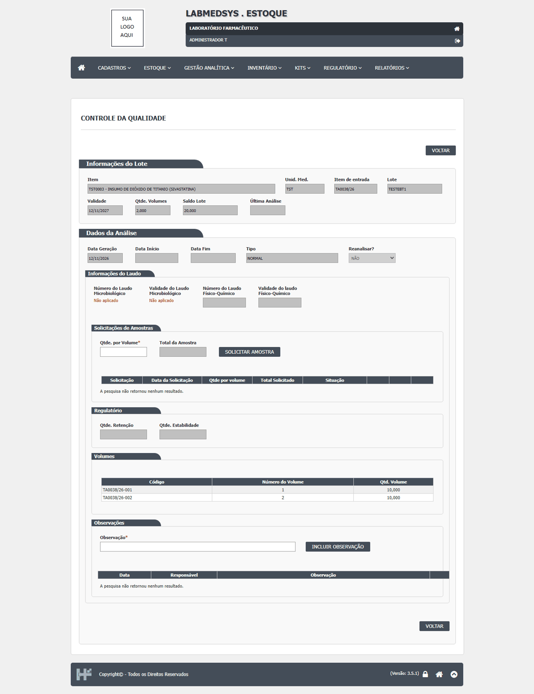
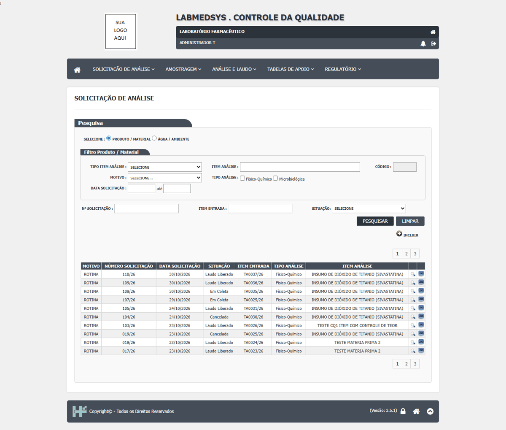
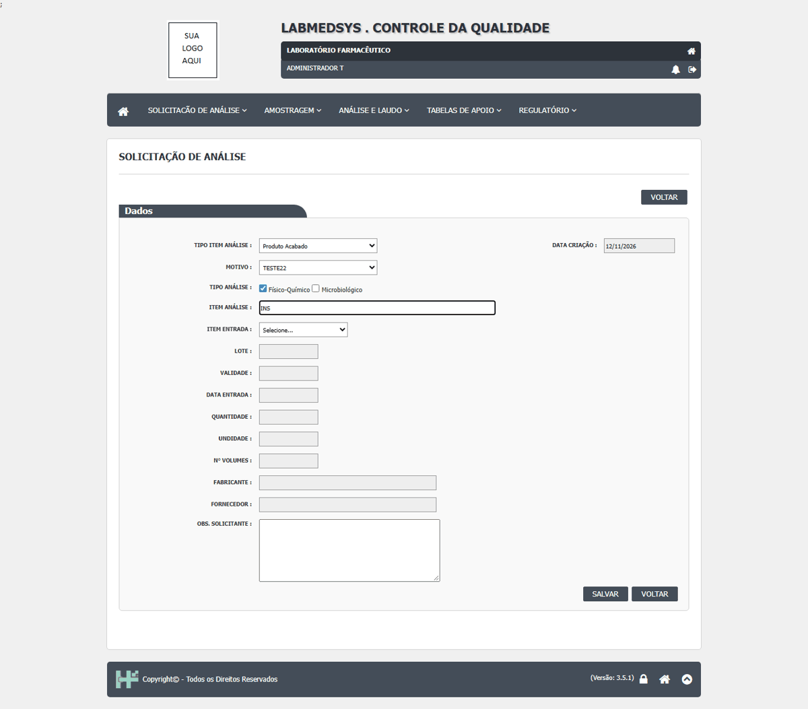
DV-CQ-001 · Programação de Solicitação de Análise dá erro interno ao carregar os pontos de água
Ao escolher um tipo de água e clicar em **CARREGAR**, a agenda aparece, mas a lista de pontos a programar fica vazia e surge a janela **"Erro: Ocorreu um erro interno não esperado."**. Sem a lista, não é possível programar coletas de água pelo CQ. Os pontos existem e estão ativos no cadastro do Principal (CADASTRO DE PONTOS DE ÁGUA: PTA-PW-01 purificada, PTA-POT-01 potável, TST-PA1 de teste).
Como reproduzir o erro, passo a passo
- Entrar no módulo Controle da Qualidade e abrir Solicitação de Análise › Programação de Solicitação de Análise.
- Em TIPO ITEM ANÁLISE, escolher ÁGUA POTÁVEL (ou ÁGUA PURIFICADA).
- Em TIPO ANÁLISE, marcar Físico-Químico (ou Microbiológico).
- Clicar em CARREGAR.
Esperado
A lista de pontos de água do tipo escolhido, para programar as coletas na agenda; se não houver pontos, uma mensagem clara como "Nenhum ponto de água cadastrado para este tipo".
Obtido
"Erro: Ocorreu um erro interno não esperado." A agenda do mês aparece vazia e a lista de pontos não aparece. Repetiu-se com ÁGUA POTÁVEL + Físico-Químico e com ÁGUA PURIFICADA + Microbiológico.
Evidência (captura da tela)
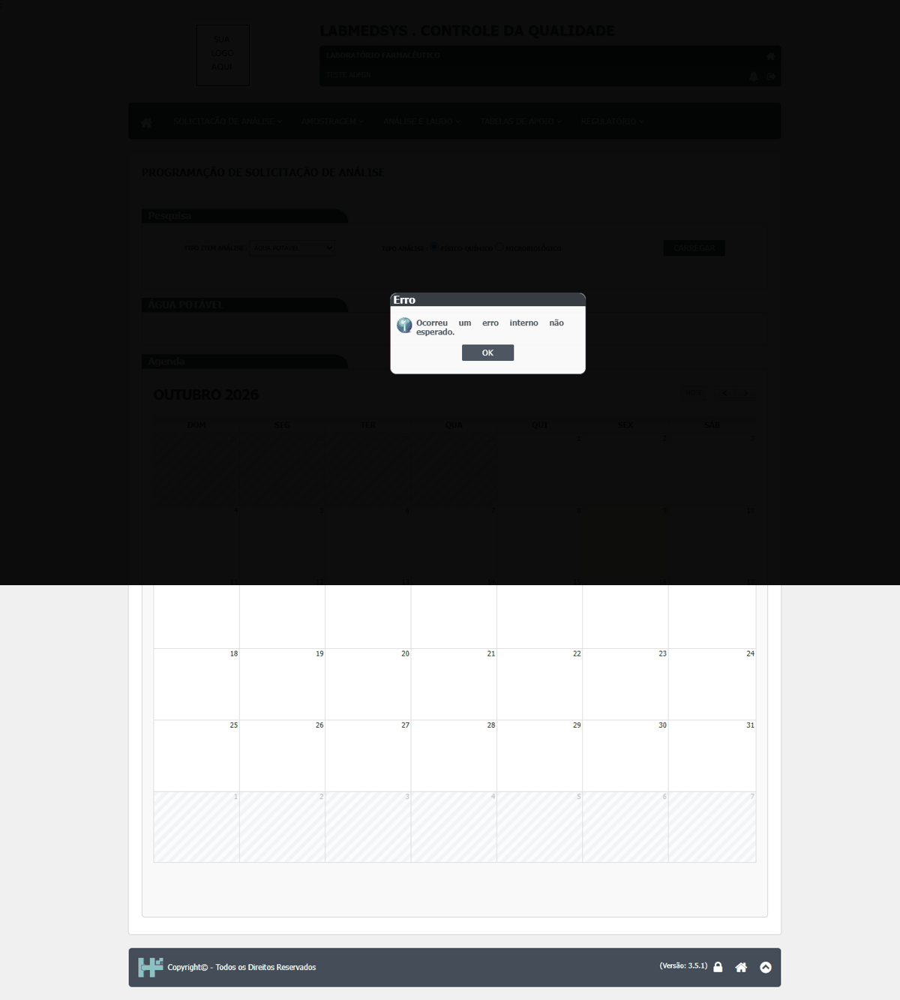
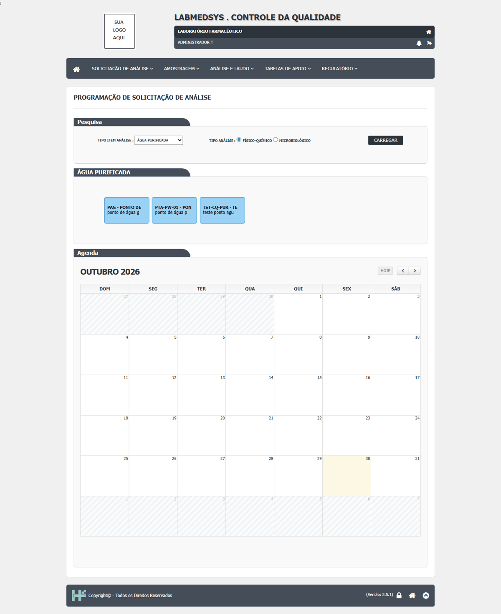
DV-CQ-018 · Excluir coleta agendada e excluir checklist de verificação não pedem justificativa nem deixam histórico
Na agenda de ambiente, a coleta de 27/10 foi excluída pelo ícone da lixeira: só "Deseja excluir a Solicitação?" e pronto; a solicitação sai da lista e o log dela diz **"NÃO EXISTE LOG DE ALTERAÇÃO PARA ESTE REGISTRO."** Na **Verificação de Amostragens**, a exclusão de um checklist também não pediu justificativa e o log do cadastro mostra só a inclusão.
Como reproduzir o erro, passo a passo
- Na agenda, arrastar uma sala para um dia futuro e depois clicar na lixeira do evento.
- Em Verificação de Amostragens, excluir um checklist e abrir o ícone Log.
Esperado
Justificativa obrigatória e histórico da exclusão.
Obtido
Sem justificativa e sem histórico.
Evidência (captura da tela)


DV-CQ-020 · A agenda aceita ambiente com análise físico-química e horários fora de 8h às 18h
Na **Regra Amostragem** a caixa "Físico-Químico" fica desabilitada para ambiente (CT-CQ-020 passou), mas na **agenda** o tipo AMBIENTE com **Físico-Químico** carrega as salas e o agendamento da sala PRD-PES-01 em 26/10 foi **aceito**, gerando solicitação físico-química de ambiente (1027/26). Horários **23:30** e **00:01** também foram aceitos (a tela só recusa horário inválido, como 25:99, e horário já ocupado).
Como reproduzir o erro, passo a passo
- Em Programação de Solicitação de Análise, escolher AMBIENTE, marcar Físico-Químico e Carregar.
- Arrastar uma sala para um dia futuro, informar 10:00 e OK.
Esperado
Só microbiológico para ambiente; horário dentro do expediente definido.
Obtido
Aceitou físico-químico e horários de madrugada.
Evidência (captura da tela)
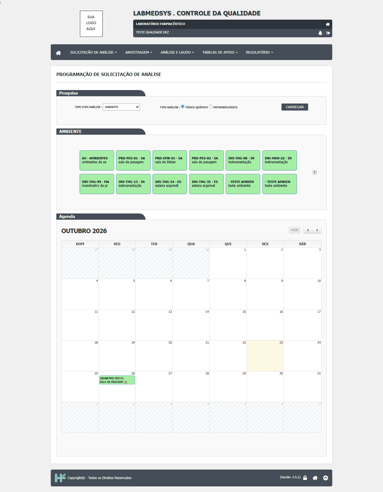
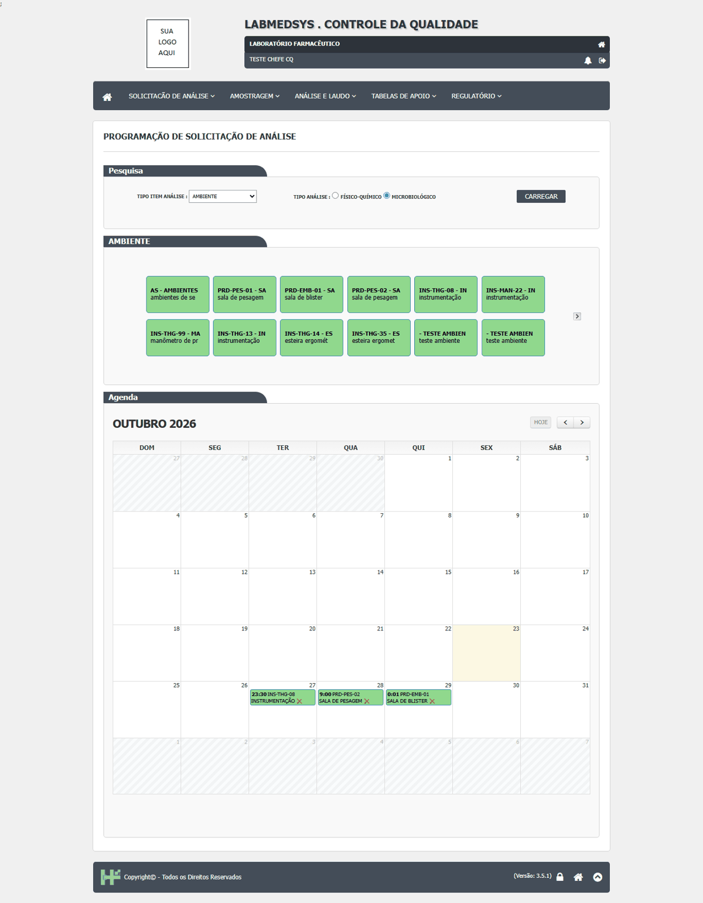
DV-CQ-021 · A lista de Solicitação de Análise mostra "Laudo Liberado" em solicitação que está Cancelada
A solicitação 016/26 está **Cancelada** (a tela Detalhar mostra "Cancelada" e o filtro situação = CANCELADA a encontra), mas a **coluna Situação da lista continua "Laudo Liberado"**, inclusive no resultado do filtro Cancelada. O filtro "Laudo liberado" já não a traz, ou seja, lista e filtro discordam.
Como reproduzir o erro, passo a passo
- Cancelar uma solicitação com laudo liberado (ver DV-CQ-007).
- Na lista de Solicitação de Análise, filtrar por situação CANCELADA e ler a coluna Situação.
Esperado
Coluna Situação = Cancelada.
Obtido
Coluna Situação = Laudo Liberado.
Evidência (captura da tela)
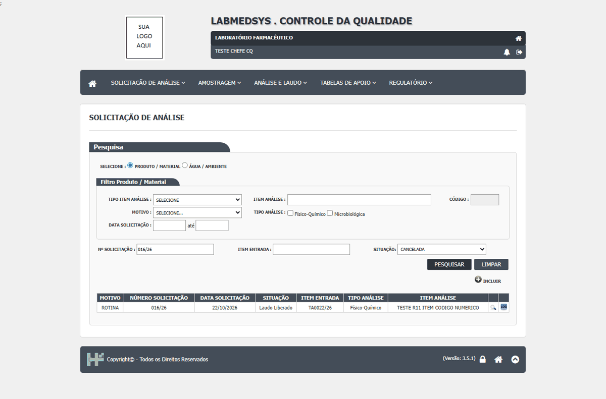
DV-CQ-023 · A agenda de ambiente não tem frequência nem recorrência: cada coleta é marcada uma a uma
A tela tem só o tipo de item, o tipo de análise, as salas e o calendário: **nenhuma opção de frequência, periodicidade ou recorrência** por sala. A tela de água não carrega (DV-CQ-008), então a conferência valeu para ambiente.
Como reproduzir o erro, passo a passo
- Abrir a Programação de Solicitação de Análise, escolher AMBIENTE e Carregar; procurar opção de frequência.
Esperado
Programar a frequência de monitoramento por ponto ou sala.
Obtido
Só agendamento avulso, arrastando a sala para um dia.
Evidência (captura da tela)
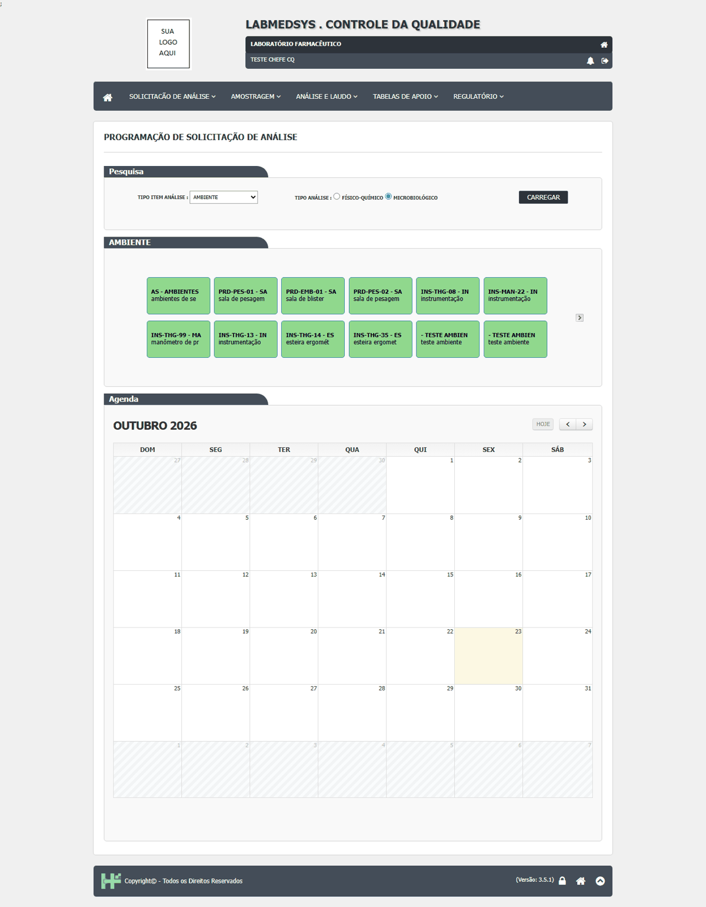
DV-CQ-056 · A reanálise mostra "Não foi possível fazer reanálise para esta solicitação." mas cancela a solicitação de origem e cria a nova
Na reanálise de uma solicitação de água (105/26), escolhi a fase Amostragem, escrevi a observação e cliquei em Salvar: a tela respondeu "Não foi possível fazer reanálise para esta solicitação." Ao voltar para a lista, a solicitação de origem (105/26) estava **Cancelada** e existia uma nova (106/26) em **Em Coleta**. A mensagem diz que falhou, mas a reanálise foi feita. A tela de reanálise de água também traz a legenda "Produto / Material" e o Tipo Item Análise vazio (ver DV-CQ-058).
Como reproduzir o erro, passo a passo
- Entrar no CQ com o administrador de teste e abrir Solicitação de Análise, opção ÁGUA / AMBIENTE.
- Abrir a lupa de uma solicitação sem motivo (a 105/26, criada nesta rodada) e clicar em REANÁLISE.
- Marcar a fase Amostragem, escrever uma observação e clicar em SALVAR.
- Voltar à lista de Água / Ambiente e ler a situação da 105/26 e da solicitação nova.
Esperado
Se a reanálise não é possível, nada muda e a mensagem explica o motivo; se é feita, a tela avisa que foi feita e mostra a nova solicitação.
Obtido
Mensagem de falha, mas a origem foi cancelada e a nova foi criada.
Evidência (captura da tela)
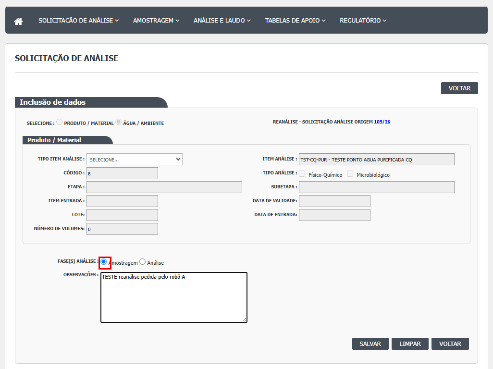
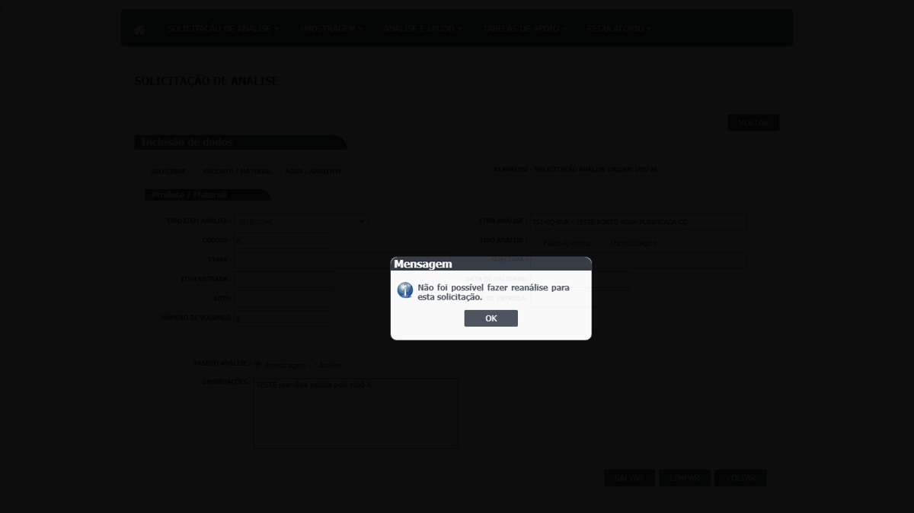

DV-CQ-057 · A solicitação criada com "Ocorreu um erro inesperado." fica sem histórico: "NÃO EXISTE LOG DE ALTERAÇÃO PARA ESTE REGISTRO."
A solicitação de água 105/26, gravada quando a tela mostrou "Ocorreu um erro inesperado." (DV-CQ-047, mesmo padrão), foi aberta pelo ícone LOG e a janela respondeu "NÃO EXISTE LOG DE ALTERAÇÃO PARA ESTE REGISTRO." Solicitações antigas mostram a linha "INCLUSÃO DE NOVO REGISTRO." (ver a imagem). Segundo o robô, as três primeiras linhas da lista, criadas em 10 e 12/11/2026, também estavam sem log. **Falta a imagem da mensagem "NÃO EXISTE LOG" da 105/26** (a Figura 1 mostra o log de uma solicitação antiga, de 28/10): refazer o print no reteste.
Como reproduzir o erro, passo a passo
- Incluir uma solicitação de água (a tela mostra "Ocorreu um erro inesperado." e grava).
- Na lista de Água / Ambiente, clicar no ícone LOG da solicitação nova.
- Ler a mensagem da janela e comparar com o LOG de uma solicitação antiga.
Esperado
Toda inclusão deixa a linha "INCLUSÃO DE NOVO REGISTRO." com data, hora e usuário.
Obtido
Log vazio ("NÃO EXISTE LOG DE ALTERAÇÃO PARA ESTE REGISTRO.") na solicitação criada com erro.
Evidência (captura da tela)
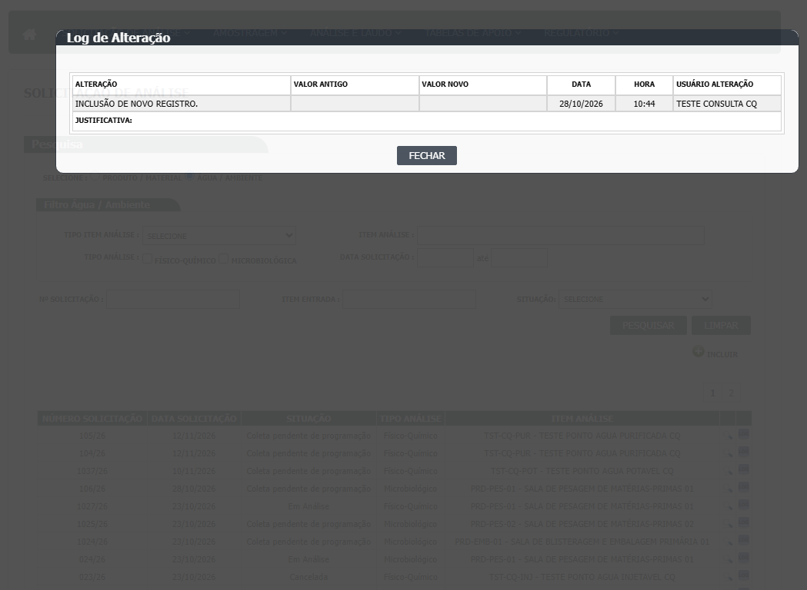
DV-CQ-060 · Programação de Solicitação de Análise: Carregar em Ambiente (físico-químico) dá "Ocorreu um erro interno não esperado." e não traz salas nem calendário
Com **Ambiente** em Tipo item análise e **Físico-Químico** em Tipo análise, ao clicar em **CARREGAR** a tela mostra a janela **"Erro: Ocorreu um erro interno não esperado."** e não traz as salas nem o calendário. Nenhum Tipo análise vem marcado ao escolher Ambiente. É da mesma família de DV-CQ-001 e DV-CQ-008 (água), agora para ambiente; no DV-CQ-008 a água de ambiente funcionava. A causa precisa depende das linhas ERROR do servidor (ver COMO-LER-OS-ERROS-DO-SERVIDOR.md).
Como reproduzir o erro, passo a passo
- Entrar no CQ com o administrador de teste e abrir Solicitação de Análise › Programação de Solicitação de Análise.
- Em TIPO ITEM ANÁLISE, escolher Ambiente.
- Em TIPO ANÁLISE, marcar Físico-Químico.
- Clicar em CARREGAR.
Esperado
A lista de salas e o calendário do mês, ou, se o tipo não se aplica a ambiente, uma mensagem clara de validação.
Obtido
Janela "Erro: Ocorreu um erro interno não esperado."; sem salas e sem calendário.
Evidência (captura da tela)
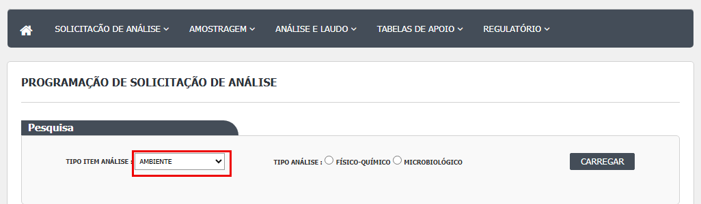

DV-CQ-024 · As solicitações geradas pela agenda e a de item com teor recebem número fora da sequência (1024/26, 1025/26, 1027/26 e 103/26)
Depois da solicitação 019/26, as coletas agendadas na agenda de ambiente receberam os números **1024/26, 1025/26 e 1027/26** (o código interno) e a primeira solicitação de material depois delas veio como **103/26**, em vez de 025/26 e seguintes. A numeração sequencial por ano deixa de ser confiável.
Como reproduzir o erro, passo a passo
- Agendar uma coleta de ambiente na agenda e olhar o número na lista de Solicitação de Análise (Água / Ambiente).
Esperado
Número sequencial do ano (025/26, 026/26...).
Obtido
Número igual ao código interno.
Evidência (captura da tela)
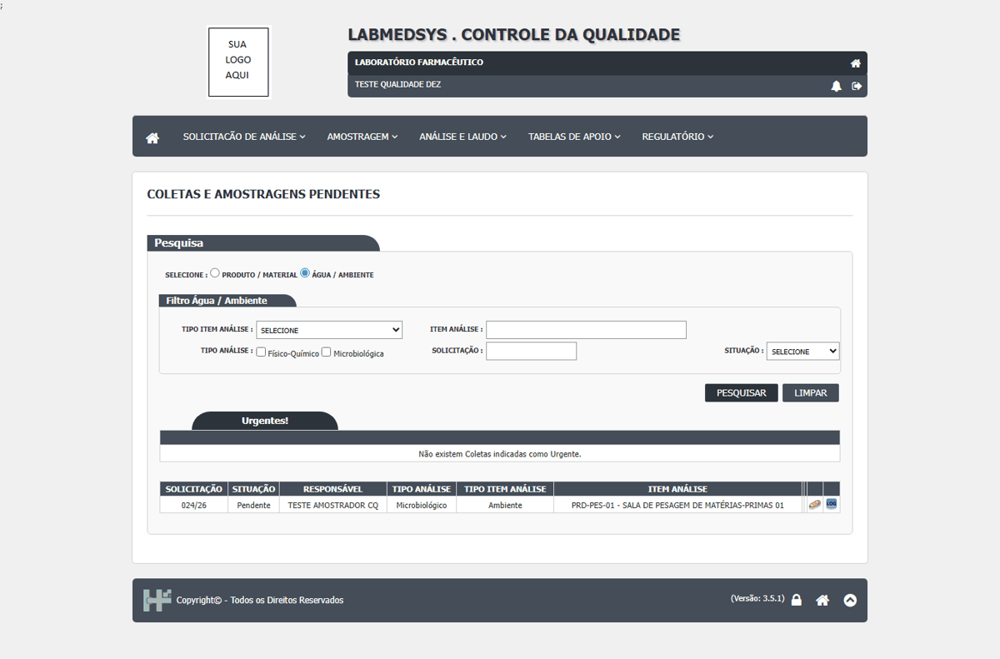
DV-CQ-058 · Erros de texto na Solicitação de Análise: o campo "UNDIDADE" e a legenda "Produto / Material" na reanálise de água
Na inclusão de produto/material o rótulo do campo da unidade de medida é escrito "UNDIDADE" (o manual chama de "Unidade"). Na tela de reanálise de uma solicitação de **água**, o quadro tem a legenda "Produto / Material" e o campo Tipo Item Análise vem vazio. Sem efeito nos dados, mas confunde quem usa e aparece nos manuais.
Como reproduzir o erro, passo a passo
- Abrir Solicitação de Análise, marcar PRODUTO / MATERIAL e clicar em INCLUIR; ler o rótulo do campo da unidade.
- Abrir o detalhe de uma solicitação de água e clicar em REANÁLISE; ler a legenda do quadro e o Tipo Item Análise.
Esperado
Rótulo "UNIDADE" e legenda "Água / Ambiente" na reanálise de água.
Obtido
"UNDIDADE" e "Produto / Material" na reanálise de água.
Evidência (captura da tela)
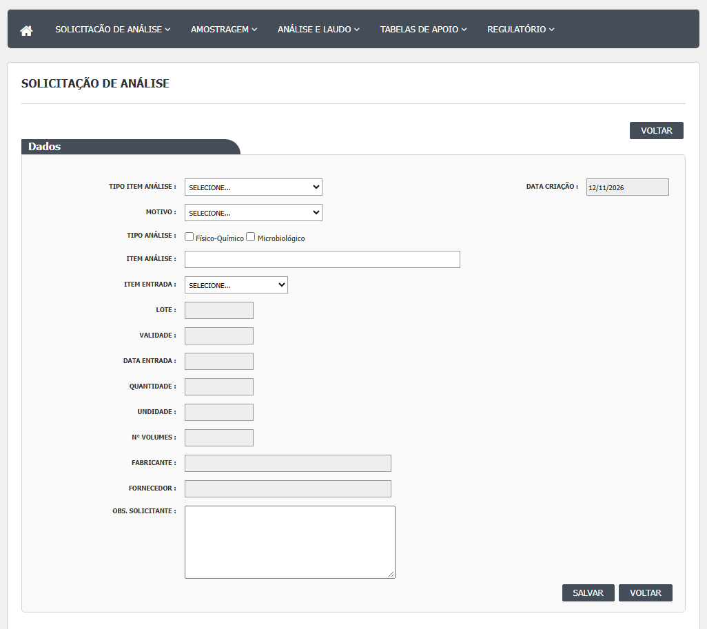

DV-CQ-061 · Programação de Solicitação de Análise: a janela "Agendamento dia" não mostra a data escolhida
Ao arrastar um ponto ou sala para um dia, abre a janela **"Agendamento dia:"** com TAG, descrição e horário, mas o título fica sem a data: o usuário não vê o dia que escolheu. O código grava a data em um campo do tipo span que não exibe texto (Agenda.js, `$('#spData').val(...)`).
Como reproduzir o erro, passo a passo
- Abrir a Programação de Solicitação de Análise, escolher Água purificada e Microbiológico e clicar em CARREGAR.
- Arrastar uma caixa de ponto para um dia do calendário.
Esperado
Título com a data, por exemplo "Agendamento dia: 20/11/2026".
Obtido
Título "Agendamento dia:" sem a data.
Evidência (captura da tela)
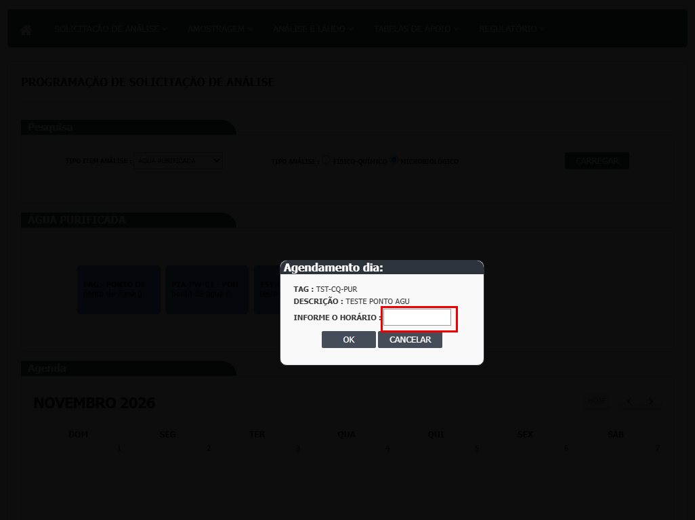